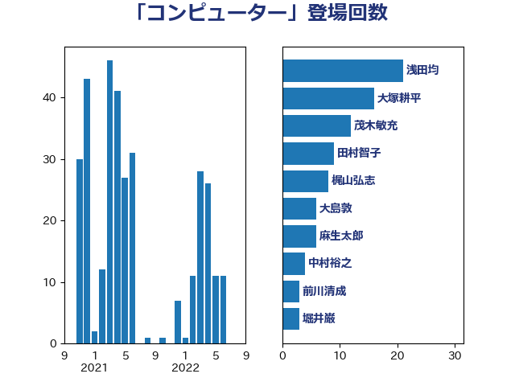

単語「コンピューター」

| 浅田均 | 日本維新の会 | 21 回 |
| 大塚耕平 | 国民民主党 | 16 回 |
| 茂木敏充 | 自由民主党 | 12 回 |
| 田村智子 | 日本共産党 | 9 回 |
| 梶山弘志 | 自由民主党 | 8 回 |
| 大島敦 | 立憲民主党 | 6 回 |
| 麻生太郎 | 自由民主党 | 6 回 |
| 中村裕之 | 自由民主党 | 4 回 |
| 前川清成 | 日本維新の会 | 3 回 |
| 堀井巌 | 自由民主党 | 3 回 |
| 安達澄 | 無所属 | 3 回 |
| 小林鷹之 | 自由民主党 | 3 回 |
| 岸信夫 | 自由民主党 | 3 回 |
| 東徹 | 日本維新の会 | 3 回 |
| 柿沢未途 | 無所属 | 3 回 |
| 芳賀道也 | 国民民主党 | 3 回 |
| 藤丸敏 | 自由民主党 | 3 回 |
| 輿水恵一 | 公明党 | 3 回 |
| 青山繁晴 | 自由民主党 | 3 回 |
| 上田清司 | 国民民主党 | 2 回 |
| 小倉將信 | 自由民主党 | 2 回 |
| 小野泰輔 | 日本維新の会 | 2 回 |
| 山崎正恭 | 公明党 | 2 回 |
| 末松義規 | 立憲民主党 | 2 回 |
| 杉尾秀哉 | 立憲民主党 | 2 回 |
| 枝野幸男 | 立憲民主党 | 2 回 |
| 森山浩行 | 立憲民主党 | 2 回 |
| 櫻井周 | 立憲民主党 | 2 回 |
| 沢田良 | 日本維新の会 | 2 回 |
| 清水真人 | 自由民主党 | 2 回 |
| 田村まみ | 国民民主党 | 2 回 |
| 田村憲久 | 自由民主党 | 2 回 |
| 萩生田光一 | 自由民主党 | 2 回 |
| 西村康稔 | 自由民主党 | 2 回 |
| 赤羽一嘉 | 公明党 | 2 回 |
| 高野光二郎 | 自由民主党 | 2 回 |
| 鰐淵洋子 | 公明党 | 2 回 |
| 上杉謙太郎 | 自由民主党 | 1 回 |
| 下条みつ | 立憲民主党 | 1 回 |
| 中川宏昌 | 公明党 | 1 回 |
| 井上哲士 | 日本共産党 | 1 回 |
| 仁木博文 | 無所属 | 1 回 |
| 伊藤孝恵 | 国民民主党 | 1 回 |
| 佐藤茂樹 | 公明党 | 1 回 |
| 古川元久 | 国民民主党 | 1 回 |
| 塩川鉄也 | 日本共産党 | 1 回 |
| 宮本周司 | 自由民主党 | 1 回 |
| 小山展弘 | 立憲民主党 | 1 回 |
| 小田原潔 | 自由民主党 | 1 回 |
| 小西洋之 | 立憲民主党 | 1 回 |
| 尾身朝子 | 自由民主党 | 1 回 |
| 山田太郎 | 自由民主党 | 1 回 |
| 岩渕友 | 日本共産党 | 1 回 |
| 岬麻紀 | 日本維新の会 | 1 回 |
| 工藤彰三 | 自由民主党 | 1 回 |
| 市村浩一郎 | 日本維新の会 | 1 回 |
| 平林晃 | 公明党 | 1 回 |
| 後藤祐一 | 立憲民主党 | 1 回 |
| 日下正喜 | 公明党 | 1 回 |
| 有村治子 | 自由民主党 | 1 回 |
| 本村伸子 | 日本共産党 | 1 回 |
| 杉本和巳 | 日本維新の会 | 1 回 |
| 松山政司 | 自由民主党 | 1 回 |
| 松木けんこう | 立憲民主党 | 1 回 |
| 梅村聡 | 日本維新の会 | 1 回 |
| 森田俊和 | 立憲民主党 | 1 回 |
| 榛葉賀津也 | 国民民主党 | 1 回 |
| 河野太郎 | 自由民主党 | 1 回 |
| 浜地雅一 | 公明党 | 1 回 |
| 浦野靖人 | 日本維新の会 | 1 回 |
| 海江田万里 | 立憲民主党 | 1 回 |
| 片山さつき | 自由民主党 | 1 回 |
| 石川昭政 | 自由民主党 | 1 回 |
| 福島みずほ | 社会民主党 | 1 回 |
| 福重隆浩 | 公明党 | 1 回 |
| 羽田次郎 | 立憲民主党 | 1 回 |
| 若宮健嗣 | 自由民主党 | 1 回 |
| 落合貴之 | 立憲民主党 | 1 回 |
| 西田昌司 | 自由民主党 | 1 回 |
| 谷田川元 | 立憲民主党 | 1 回 |
| 赤池誠章 | 自由民主党 | 1 回 |
| 近藤和也 | 立憲民主党 | 1 回 |
| 野上浩太郎 | 自由民主党 | 1 回 |
| 阿部司 | 日本維新の会 | 1 回 |
| 青木愛 | 立憲民主党 | 1 回 |